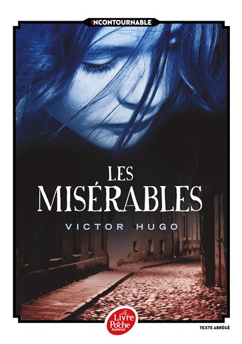

Les Misérables

Description
Le destin de Jean Valjean, forçat échappé du bagne, est bouleversé par sa rencontre avec Fantine. Mourante et sans le sou, celle-ci lui demande de prendre soin de Cosette, sa fille confiée aux Thénardier. Ce couple d'aubergistes, malhonnête et sans scrupules, exploitent la fillette jusqu'à ce que Jean Valjean tienne sa promesse et l'adopte. Cosette devient alors sa raison de vivre. Mais son passé le rattrape et l'inspecteur Javert le traque.